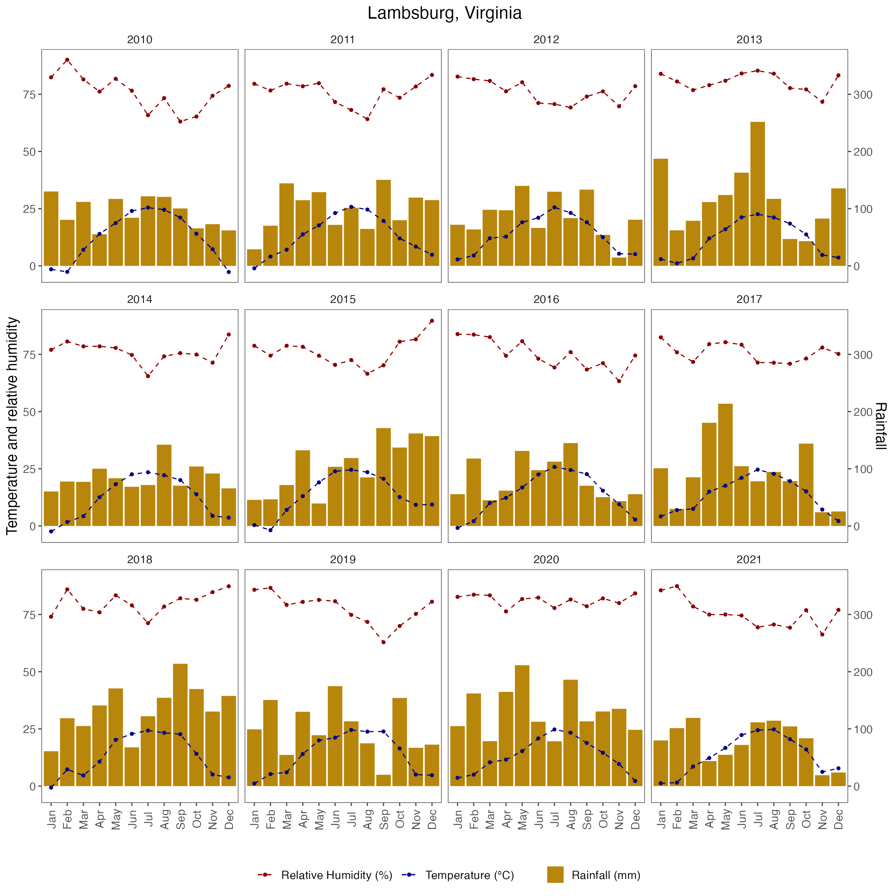

Data visualisation
Ihsan Khaliq
2024-06-29
Source:vignettes/a_01_Visualise_data.Rmd
a_01_Visualise_data.RmdLoad libraries
library("grDevices")
library("tidyverse")
library("viridis")
library("showtext")
library("here")
library("ggpubr")
library("extrafont")
library("tidyr")
library("lubridate")
library("readxl")
library("SDMTools")
library("kableExtra")
library("clifro")
library("ragg")
library("ggthemes")
library("patchwork")
library("nasapower")
library("Metrics")
library("pROC")
library("metrica")
library("lemon")
library("ggeffects")
library("ggpubr")
library("grid")
library("epiboxwoodblight")Import disease data data
Import disease data recorded at the Lowgap & Lamsburg sites
disease_dat <- read_excel(system.file(
"extdata",
"NC_disease_data.xlsx",
package = "epiboxwoodblight",
mustWork = TRUE
)) %>%
dplyr::mutate(year = as.factor(year)) %>%
dplyr::mutate(location = as.factor(location)) %>%
dplyr::mutate(spread_event = as.factor(spread_event)) %>%
dplyr::mutate(replicate = as.factor(replicate)) %>%
dplyr::mutate(treatment = as.factor(treatment)) %>%
dplyr::mutate(total_count = as.integer(total_count)) %>%
dplyr::mutate(month = as.factor(months(date_in))) %>%
dplyr::mutate(spev_duration = as.integer(difftime(date_out, date_in))) %>%
relocate(month, .after = date_out) %>%
na.omit() %>%
group_by(
year,
location,
spread_event,
month,
treatment,
date_in,
date_out,
cultivar,
spev_duration
) %>%
summarise(total_count = sum(total_count))Import weather data
# Filter rainy periods to calculate average wind speed, wind direction & temperature wet period
weather_dat_rain <- read_excel(system.file(
"extdata",
"NC_weather_data.xlsx",
package = "epiboxwoodblight",
mustWork = TRUE
)) %>%
select(year,
wind_speed,
wind_direction,
temperature,
precipitation,
location,
spread_event) %>%
dplyr::mutate(year = as.factor(year)) %>%
dplyr::mutate(location = as.factor(location)) %>%
dplyr::mutate(spread_event = as.factor(spread_event)) %>%
dplyr::mutate(rain_duration = as.integer(precipitation > 0)) %>%
filter(precipitation > 0) %>%
group_by(year, location, spread_event) %>%
summarise(
total_rain = round(sum(precipitation), 5),
mean_ws = round(mean(wind_speed), 2),
rain_duration = round(sum(rain_duration * 15 / 60), 2),
mean_wd = round(circular.averaging(wind_direction), 2),
mean_temp = round(mean(temperature), 2)
)
# Filter rainless periods to calculate mean RH
weather_dat_no_rain <-
read_excel(system.file(
"extdata",
"NC_weather_data.xlsx",
package = "epiboxwoodblight",
mustWork = TRUE
)) %>%
select(
year,
relative_humidity,
leaf_wetness_duration,
precipitation,
location,
spread_event,
date
) %>%
dplyr::mutate(year = as.factor(year)) %>%
dplyr::mutate(location = as.factor(location)) %>%
dplyr::mutate(spread_event = as.factor(spread_event)) %>%
filter(precipitation == 0) %>%
group_by(year, location, spread_event) %>%
summarise(mean_rh = round(mean(relative_humidity * 100), 2))
# Combine data
weather_dat_comb <-
left_join(weather_dat_rain,
weather_dat_no_rain,
by = c("year", "location", "spread_event"))
# Leaf wetness duration both inside and outside rainy periods
weather_wet <- read_excel(system.file(
"extdata",
"NC_weather_data.xlsx",
package = "epiboxwoodblight",
mustWork = TRUE
)) %>%
dplyr::mutate(year = as.factor(year)) %>%
dplyr::mutate(location = as.factor(location)) %>%
dplyr::mutate(spread_event = as.factor(spread_event)) %>%
group_by(year, location, spread_event) %>%
summarise(lwd_duration = round(sum(leaf_wetness_duration / 60), 2))
weather_dat <-
left_join(weather_dat_comb,
weather_wet,
by = c("year", "location", "spread_event"))
# Divide week 1 of 2014 rain/rain duration/wetness duration by 4 & that of week 2 & 3 by 3 to convert to per week data because the duration of spread event was 4 and 3 weeks, respectively.
weather_dat <- weather_dat %>%
mutate(
total_rain = ifelse(
year == "2017" & spread_event == "1",
total_rain / 4,
ifelse(
year == "2017" &
spread_event %in% c("2", "3"),
total_rain / 3,
total_rain
)
),
rain_duration = ifelse(
year == "2017" & spread_event == "1",
rain_duration / 4,
ifelse(
year == "2017" &
spread_event %in% c("2", "3"),
rain_duration / 3,
rain_duration
)
),
lwd_duration = ifelse(
year == "2017" & spread_event == "1",
lwd_duration / 4,
ifelse(
year == "2017" &
spread_event %in% c("2", "3"),
lwd_duration / 3,
lwd_duration
)
)
)Cobmine weather & disease data
Combine weather and disease data
dat_NC <-
left_join(disease_dat,
weather_dat,
by = c("year", "location", "spread_event")) %>%
# Replace NA with zero because NA are introduced due to data munging. Original values were zero
dplyr::mutate(total_rain = replace_na(total_rain, 0)) %>%
dplyr::mutate(rain_duration = replace_na(rain_duration, 0))
# Since we filtered data separately for precipitation and then without precipitation, NAs are introduced. In this step, data (in which values were added manually) is imported
dat_missing <- read_excel(system.file(
"extdata",
"NC_missing_data.xlsx",
package = "epiboxwoodblight",
mustWork = TRUE
)) %>%
dplyr::mutate(year = as.factor(year)) %>%
dplyr::mutate(location = as.factor(location)) %>%
dplyr::mutate(spread_event = as.factor(spread_event))
# Combine data to replace NA values with distinct data
dat_nc <-
left_join(dat_NC, dat_missing, by = c("year", "location", "spread_event")) %>%
mutate(mean_ws = coalesce(mean_ws.x, mean_ws.y)) %>%
select(-mean_ws.x, -mean_ws.y) %>%
mutate(mean_temp = coalesce(mean_temp.x, mean_temp.y)) %>%
select(-mean_temp.x, -mean_temp.y) %>%
mutate(mean_rh = coalesce(mean_rh.x, mean_rh.y)) %>%
select(-mean_rh.x, -mean_rh.y) %>%
mutate(mean_wd = coalesce(mean_wd.x, mean_wd.y)) %>%
select(-mean_wd.x, -mean_wd.y) %>%
mutate(lwd_duration = coalesce(lwd_duration.x, lwd_duration.y)) %>%
select(-lwd_duration.x, -lwd_duration.y) %>%
distinct()
dat_nc <- dat_nc %>%
mutate(daily_rain = round(total_rain/spev_duration, 2),
daily_lwd = round(lwd_duration/spev_duration, 2))
# Filter out mulch treatment. Use non-mulch and CP only.
dat_nc_ncb <- dat_nc %>%
filter(treatment != "mulch", treatment != "between_row") # filter non-mulch, CP and between row treatments data
# Data considering only CP treatment
dat_cp <- dat_nc %>%
filter(treatment == "CP")
# Data considering only leaf debris treatment
dat_ld <- dat_nc %>%
filter(treatment == "non_mulch")
# Data considering only between row treatment
dat_br <- dat_nc %>%
filter(treatment == "between_row")
# Data for Lambsburg site only
dat_lambsburg <- dat_nc %>%
filter(location == "Lambsburg") %>%
filter(treatment != "mulch", treatment != "between_row")Histogram
Histogram plot to visualize the distribution of the number of infected leaves per plant.
ggplot(dat_nc_ncb, aes(x = total_count)) +
geom_histogram(binwidth = 2,
fill = "steelblue",
alpha = 0.7) +
xlab("Number of infected leaves")Infected leaf count per week
dat_week <- dat_nc_ncb %>%
mutate(date_in = format(date_in, "%m/%d")) %>%
group_by(year, date_in) %>%
arrange(year, date_in, total_count) %>%
ungroup() %>%
mutate(date_in = as.factor(date_in)) %>%
mutate(treatment = recode(treatment,
"CP" = "Infected canopies",
"non_mulch" = "Leaf debris")) %>%
rename("Inoculum source" = treatment)
dates_weeks <- dat_week |>
mutate(date = mdy(paste0(date_in, year)),
week = week(date))
min_week <- min(dates_weeks$week)
max_week <- max(dates_weeks$week)
year_breaks <- 2017:2014 |>
set_names() |>
map(\(year_n) {
year_dat <- dates_weeks |>
filter(year == year_n) |>
select(date_in, week) |>
unique()
week_map <- character(max_week - min_week + 1)
names(week_map) <- seq(min_week, max_week)
week_map[as.character(year_dat$week)] <-
as.character(year_dat$date_in)
week_map
})
p <- dates_weeks |>
mutate(week = factor(week),
`Inoculum source` = factor(`Inoculum source`)) |>
nest(data = -year) |>
mutate(pl = map2(data, year, \(data, year) {
# browser()
ggplot(data, aes(x = week, y = total_count, fill = `Inoculum source`)) +
geom_col() +
scale_x_discrete(labels = year_breaks[[as.character(year)]],
drop = FALSE) +
facet_wrap(year, scales = "free_y", strip.position = "right") +
scale_fill_manual(values = c(
"Infected canopies" = "navyblue",
"Leaf debris" = "darkred"
)) +
theme_few(base_size = 10) +
coord_cartesian(ylim = c(0, 1000))
})) |>
pull(pl) |>
wrap_plots(ncol = 1) +
plot_layout(guides = "collect") & xlab(NULL) & ylab(NULL) &
theme(
legend.position = "top",
axis.text.x = element_text(
angle = 90,
hjust = 1,
vjust = 0.5,
color = "black"
),
axis.text.y = element_text(vjust = 0.5, color = "black"),
axis.title = element_text(color = "black"),
strip.text = element_text(face = "bold", color = "black")
)
p <-
p + labs(x = "Date of detector plants placement in the field") +
theme(axis.title.x = element_text(hjust = 0.5)) # Center x-axis label
p <- wrap_elements(p) +
labs(tag = "Infected leaf count on detector plants in each monitoring week") +
theme(plot.tag = element_text(size = rel(1), angle = 90),
plot.tag.position = "left")
p
Windroses showing wind speed & direction in each year
fig_S <-
with(
dat_nc_ncb,
windrose(
mean_ws,
mean_wd,
year,
n_col = 2,
legend_title = "Wind speed (m/s)"
)
)
fig_S3 <-
fig_S +
scale_fill_viridis_d(name = "Wind Speed (m/s)", direction = -1) +
xlab("") +
theme_pubclean(base_family = "Arial", base_size = 12)## Scale for fill is already present.
## Adding another scale for fill, which will replace the existing scale.
fig_SHeatmaps
Heatmap for leaf wetness duration & temperature relationship
dat_lwd <-
dat_nc_ncb %>%
as_tibble() %>%
mutate(
mean_temp = cut_interval(mean_temp, n = 10, dig.lab = 5),
lwd_duration = cut_interval(lwd_duration, n = 10, dig.lab = 5),
) %>%
group_by(mean_temp, lwd_duration) %>%
summarize(total_count = sum(total_count))## `summarise()` has grouped output by 'mean_temp'. You can override using the
## `.groups` argument.
# function to standardize the labels generated by cut_interval
standardize_cut_levels <- function(l, dig = 2) {
sapply(l, \(s) {
m = gregexpr("\\d+\\.?\\d{0,}", s)
m = regmatches(s, m)[[1]]
r = sub(m[1], trimws(sprintf(
paste0("%9.", dig, "f"), as.numeric(m[1])
)), s)
sub(m[2], trimws(sprintf(
paste0("%9.", dig, "f"), as.numeric(m[2])
)), r)
})
}
levels(dat_lwd$mean_temp) <-
standardize_cut_levels(levels(dat_lwd$mean_temp))
levels(dat_lwd$lwd_duration) <-
standardize_cut_levels(levels(dat_lwd$lwd_duration))
heatmap_lwd <- ggplot(dat_lwd, aes(mean_temp, lwd_duration)) +
geom_tile(aes(fill = total_count), color = "black") +
geom_text(aes(label = round(total_count, 1))) +
scale_fill_gradient(low = "white", high = "red") +
labs(x = "Mean temperature (°C)", y = "Leaf wetness duration (h)") +
guides(fill = "none") +
theme(panel.grid.major = element_blank()) +
theme_few(base_size = 12, base_family = "Arial")
heatmap_lwdHeatmap for rain & temperature relationship
dat_rain <-
dat_nc_ncb %>%
as_tibble() %>%
mutate(
mean_temp = cut_interval(mean_temp, n = 10, dig.lab = 5),
total_rain = cut_interval(total_rain, n = 10, dig.lab = 5),
) %>%
group_by(mean_temp, total_rain) %>%
summarize(total_count = sum(total_count))## `summarise()` has grouped output by 'mean_temp'. You can override using the
## `.groups` argument.
# function to standardize the labels generated by cut_interval
standardize_cut_levels <- function(l, dig = 2) {
sapply(l, \(s) {
m = gregexpr("\\d+\\.?\\d{0,}", s)
m = regmatches(s, m)[[1]]
r = sub(m[1], trimws(sprintf(
paste0("%9.", dig, "f"), as.numeric(m[1])
)), s)
sub(m[2], trimws(sprintf(
paste0("%9.", dig, "f"), as.numeric(m[2])
)), r)
})
}
levels(dat_rain$mean_temp) <-
standardize_cut_levels(levels(dat_rain$mean_temp))
levels(dat_rain$total_rain) <-
standardize_cut_levels(levels(dat_rain$total_rain))
heatmap_rain <- ggplot(dat_rain, aes(mean_temp, total_rain)) +
geom_tile(aes(fill = total_count), color = "black") +
geom_text(aes(label = round(total_count, 1))) +
scale_fill_gradient(low = "white", high = "red") +
labs(x = "Mean temperature during rainy periods (°C)", y = "Total rain (mm)") +
guides(fill = "none") +
theme(panel.grid.major = element_blank()) +
theme_few(base_size = 12, base_family = "Arial")
heatmap_rainHeatmap for RH & temperature relationship
dat_RH <-
dat_nc_ncb%>%
as_tibble() %>%
mutate(
mean_temp = cut_interval(mean_temp, n = 10),
mean_rh = cut_interval(mean_rh, n = 10),
) %>%
group_by(mean_temp, mean_rh) %>%
summarize(total_count = sum(total_count))## `summarise()` has grouped output by 'mean_temp'. You can override using the
## `.groups` argument.
# function to standardize the labels generated by cut_interval
standardize_cut_levels <- function(l, dig=2) {
sapply(l, \(s) {
m = gregexpr("\\d+\\.?\\d{0,}",s)
m = regmatches(s,m)[[1]]
r = sub(m[1], trimws(sprintf(paste0("%9.", dig, "f"), as.numeric(m[1]))),s)
sub(m[2], trimws(sprintf(paste0("%9.", dig, "f"), as.numeric(m[2]))),r)
})
}
levels(dat_RH$mean_temp) <- standardize_cut_levels(levels(dat_RH$mean_temp))
levels(dat_RH$mean_rh) <- standardize_cut_levels(levels(dat_RH$mean_rh))
heatmap_rh <- ggplot(dat_RH, aes(mean_temp, mean_rh)) +
geom_tile(aes(fill = total_count), color = "black") +
geom_text(aes(label = round(total_count, 1))) +
scale_fill_gradient(low = "white", high = "red") +
labs(x = "Mean temperature (°C)", y = "Mean relative humidity (%)") +
guides(fill = "none") +
theme(panel.grid.major = element_blank()) +
theme_few(base_size = 12, base_family = "Arial")
heatmap_rhCombined rain calendar heatmap (Lambsburg + Lowgap)
df1 <-
read_excel(system.file(
"extdata",
"NC_weather_data.xlsx",
package = "epiboxwoodblight",
mustWork = TRUE
)) %>%
dplyr::mutate(date = as.Date(date, "%m/%d/%Y")) %>%
dplyr::mutate(year = as.factor(year)) %>%
group_by(date, year) %>%
summarise(precipitation = round(sum(precipitation))) %>%
ungroup()## `summarise()` has grouped output by 'date'. You can override using the
## `.groups` argument.
# color ramp
pubu <- RColorBrewer::brewer.pal(9, "PuBu")
col_p <- colorRampPalette(pubu)
theme_calendar <- function() {
theme(
aspect.ratio = 1 / 2,
axis.title = element_blank(),
axis.ticks = element_blank(),
axis.text.y = element_blank(),
axis.text = element_text(),
panel.grid = element_blank(),
panel.background = element_blank(),
strip.background = element_blank(),
strip.text = element_text(face = "bold", size = 15),
legend.position = "top",
legend.text = element_text(hjust = .5),
legend.title = element_text(size = 9, hjust = 1),
plot.caption = element_text(hjust = 1, size = 8),
panel.border = element_rect(
colour = "grey",
fill = NA,
size = 1
),
plot.title = element_text(
hjust = .5,
size = 26,
face = "bold",
margin = margin(0, 0, 0.5, 0, unit = "cm")
),
plot.subtitle = element_text(hjust = .5, size = 16)
)
}
dat_prr <- df1 %>%
rename(pr = precipitation) %>%
complete(date = seq(min(date),
max(date),
"day")) %>%
mutate(
weekday = lubridate::wday(date, label = T, week_start = 1),
month = lubridate::month(date, label = T, abbr = F),
week = isoweek(date),
day = day(date)
) %>%
na.omit()
dat_prr <- mutate(
dat_prr,
week = case_when(
month == "December" & week == 1 ~ 53,
month == "January" &
week %in% 52:53 ~ 0,
TRUE ~ week
),
pcat = cut(pr, c(-1, 0, 0.5, 1:5, 7, 9, 25, 81)),
text_col = ifelse(pcat %in% c("(7,9]", "(9,25]"), "white", "black")
)
calendar_combined_rain <- ggplot(dat_prr %>%
mutate(week = week - min(week),
.by = c(year, month)),
aes(weekday, -week, fill = pcat)) +
geom_tile(colour = "white", size = .4) +
geom_text(aes(label = day, colour = text_col), size = 2.5) +
guides(fill = guide_colorsteps(
barwidth = 25,
barheight = .4,
title.position = "top"
)) +
scale_fill_manual(
values = c("white", col_p(13)),
na.value = "grey90",
drop = FALSE
) +
scale_colour_manual(values = c("black", "white"), guide = "none") +
facet_grid(year ~ month,
scales = "free") +
labs(title = " Daily rainfall during field trials (2014-2017)",
subtitle = "Rainfall",
fill = "mm") +
theme_calendar()
calendar_combined_rain
## Saving 12 x 12 in image## Saving 12 x 12 in imageCombined temperature heatmap (Lambsburg + Lowgap)
df2 <-
read_excel(system.file(
"extdata",
"NC_weather_data.xlsx",
package = "epiboxwoodblight",
mustWork = TRUE
)) %>%
dplyr::mutate(date = as.Date(date, "%m/%d/%Y")) %>%
dplyr::mutate(year = as.factor(year)) %>%
filter(precipitation > 0) %>%
group_by(date, year) %>%
summarise(temperature = mean(temperature)) %>%
ungroup()## `summarise()` has grouped output by 'date'. You can override using the
## `.groups` argument.
dat_tr <- df2 %>%
rename(tr = temperature) %>%
complete(date = seq(min(date),
max(date),
"day")) %>%
mutate(
weekday = lubridate::wday(date, label = T, week_start = 1),
month = lubridate::month(date, label = T, abbr = F),
week = isoweek(date),
day = day(date)
) %>%
na.omit()
dat_tr <- mutate(
dat_tr,
week = case_when(
month == "December" & week == 1 ~ 53,
month == "January" &
week %in% 52:53 ~ 0,
TRUE ~ week
),
pcat = cut(tr, c(1.8, 3:7, 9, 15, 22, 29)),
text_col = ifelse(pcat %in% c("(9,15]", "(15,22]"), "white", "black")
)
calendar_combined_temp <- ggplot(dat_tr %>%
mutate(week = week - min(week),
.by = c(year, month)),
aes(weekday,-week, fill = tr)) +
geom_tile(colour = "white", linewidth = 0.4) +
geom_text(aes(label = day), size = 2.5, colour = "black") + # Set text color to black
guides(fill = guide_colorsteps(
barwidth = 25,
barheight = 0.4,
title.position = "top"
)) +
scale_fill_steps2(
low = "blue",
high = "red",
midpoint = 22,
n.breaks = 10,
# Set the breaks to match the custom labels
breaks = c(3, 5, 8, 12, 15, 18, 20, 22, 25, 27),
# Use the labels argument to specify custom labels without decimal places
labels = c(3, 5, 8, 12, 15, 18, 20, 22, 25, 27)
) +
facet_grid(year ~ month,
scales = "free") +
labs(title = "Daily mean temperature during rainy periods in field trials (2014-2017)",
subtitle = "Temperature",
fill = "degree Celsius") +
theme_calendar()
calendar_combined_temp## Saving 12 x 12 in image## Saving 12 x 12 in imageNumber of hours per week with relative humidity greater than 90% and mean temperature when relative humidity was greater than 90%
During rainy periods
weather_rh <-
read_excel(system.file(
"extdata",
"NC_weather_data.xlsx",
package = "epiboxwoodblight",
mustWork = TRUE
)) %>%
mutate(day = day(date)) %>%
mutate(month = month(date)) %>%
mutate(relative_humidity = relative_humidity * 100) %>%
mutate(
spread_event = as.factor(spread_event),
year = as.factor(year),
location = as.factor(location)
) %>%
mutate(lw_rh = case_when(relative_humidity > 90 ~ 1,
TRUE ~ 0)) %>%
filter(lw_rh > 0) %>%
group_by(year, location, spread_event) %>%
summarise(temp_rh_lwd = mean(temperature),
# mean temperature when RH was > 90%
lw_rh_count = n() * 15 / 60) # Weekly number of hours when RH was greater than 90%## `summarise()` has grouped output by 'year', 'location'. You can override using
## the `.groups` argument.
# Divide week 1 of 2017 rain/rain duration/wetness duration by 4 & that of week 2 & 3 by 3 because the duration of spread event was 4 and 3 weeks, respectively.
weather_rh <- weather_rh %>%
mutate(
lw_rh_count = ifelse(
year == "2017" & spread_event == "1",
lw_rh_count/4,
ifelse(
year == "2017" &
spread_event %in% c("2", "3"),
lw_rh_count/3,
lw_rh_count
)
))
disease_dat2 <- disease_dat %>%
filter(treatment != "mulch", treatment != "between_row") %>%
group_by(year, location, spread_event, spev_duration) %>%
summarise(total_count = sum(total_count))## `summarise()` has grouped output by 'year', 'location', 'spread_event'. You can
## override using the `.groups` argument.Heatmap for hours with RH >90% & mean temperature during RH >90%
dat_RH2 <-
disease_dat_rh %>%
as_tibble() %>%
mutate(
temp_rh_lwd= cut_interval(temp_rh_lwd, n = 10),
lw_rh_count = cut_interval(lw_rh_count, n = 10),
) %>%
group_by(temp_rh_lwd, lw_rh_count) %>%
summarize(total_count = sum(total_count))## `summarise()` has grouped output by 'temp_rh_lwd'. You can override using the
## `.groups` argument.
# function to standardize the labels generated by cut_interval
standardize_cut_levels <- function(l, dig=2) {
sapply(l, \(s) {
m = gregexpr("\\d+\\.?\\d{0,}",s)
m = regmatches(s,m)[[1]]
r = sub(m[1], trimws(sprintf(paste0("%9.", dig, "f"), as.numeric(m[1]))),s)
sub(m[2], trimws(sprintf(paste0("%9.", dig, "f"), as.numeric(m[2]))),r)
})
}
levels(dat_RH2$temp_rh_lwd) <- standardize_cut_levels(levels(dat_RH2$temp_rh_lwd))
levels(dat_RH2$lw_rh_count) <- standardize_cut_levels(levels(dat_RH2$lw_rh_count))
heatmap_rh_lw <- ggplot(dat_RH2, aes(temp_rh_lwd, lw_rh_count)) +
geom_tile(aes(fill = total_count), color = "black") +
geom_text(aes(label = round(total_count, 1))) +
scale_fill_gradient(low = "white", high = "red") +
labs(x = "Mean temperature (°C)", y = "Hours relative humidity exceeding 90%") +
guides(fill = "none") +
theme(panel.grid.major = element_blank()) +
theme_few(base_size = 12, base_family = "Arial")
heatmap_rh_lw
Visualise weather data for the past 12-years to help interpret temporal patterns of boxwood blight development in Virginia
import weather data
weather_va <- get_power(
community = "ag",
lonlat = c(-80.7666, 36.5833),
pars = c("RH2M", "T2M", "PRECTOTCORR"),
dates = c("2010-01-01", "2021-12-31"),
temporal_api = "hourly"
) %>%
mutate(date = as.Date(sprintf('%04d-%02d-%02d', YEAR, MO, DY))) %>%
mutate(month = format(date, "%B")) %>%
mutate(julian_day = yday(date)) %>%
filter(date > "2009-12-31") %>%
rename_with(~ "rainfall", .cols = matches("PRECTOTCORR")) %>%
rename_with(~ "temp", .cols = matches("T2M")) %>%
rename_with(~ "rh", .cols = matches("RH2M"))
#openxlsx::write.xlsx(weather_va, "dailyWEATHER.xlsx")
# openxlsx::write.xlsx(weather_va, "daily_weather2010-2020_Lambsburg.xlsx")Plot monthly mean weather data for the trial site in Virginia
# Get monthly data for 10 years
weather_va_monthly <- weather_va %>%
group_by(YEAR, month) %>%
summarise(
total_rain = round(sum(rainfall), 2),
mean_temp = round(mean(temp), 2),
mean_rh = round(mean(rh), 2)
) ## `summarise()` has grouped output by 'YEAR'. You can override using the
## `.groups` argument.
# Convert full month names to abbreviated names
weather_va_monthly$month <- factor(weather_va_monthly$month, levels = month.name, labels = month.abb)
fig_month_va <- ggplot(weather_va_monthly, aes(x = month)) +
geom_bar(aes(y = total_rain/4, fill = "Rainfall (mm)"), stat = "identity") +
geom_line(aes(y = mean_temp, color = "Temperature (°C)", group = 1),
linetype = "dashed") +
geom_line(aes(y = mean_rh, color = "Relative Humidity (%)", group = 1),
linetype = "dashed") +
geom_point(aes(y = mean_temp, color = "Temperature (°C)"), shape = 16, size = 1.5) + # Add solid circles for temperature line
geom_point(aes(y = mean_rh, color = "Relative Humidity (%)"), shape = 16, size = 1.5) + # Add solid circles for relative humidity line
scale_y_continuous(
name = "Temperature and relative humidity",
sec.axis = sec_axis(~.*4, name = "Rainfall")
) +
scale_color_manual(
name = "",
values = c("Temperature (°C)" = "navyblue", "Relative Humidity (%)" = "darkred")
) +
scale_fill_manual(name = "", values = "darkgoldenrod") +
labs(x = "", title = "Lambsburg, Virginia") +
theme_few() +
theme(
text = element_text(size = 14),
axis.text.x = element_text(angle = 90, vjust = 0.5),
legend.position = "bottom",
plot.title = element_text(hjust = 0.5)
) +
facet_wrap(~YEAR)
fig_month_va 
Plot daily hours with RH >90% and mean temperature during those hours for Virginia trial site
weather_va_daily <- weather_va %>%
mutate(days_month = days_in_month(as.Date(paste(YEAR, MO, 1, sep = "-")))) %>%
group_by(YEAR, month) %>%
mutate(LW = case_when(rh > 90 ~ 1,
TRUE ~ 0)) %>%
filter(LW > 0) %>%
summarise(Air_LWD = mean(temp),
LWD = n()
)## `summarise()` has grouped output by 'YEAR'. You can override using the
## `.groups` argument.
# Convert full month names to abbreviated names
weather_va_daily$month <- factor(weather_va_daily$month, levels = month.name, labels = month.abb)
fig_month_va_rh <- ggplot(weather_va_daily, aes(x = month)) +
geom_bar(aes(y = LWD / 4, fill = "Hours relative humidity above 90%"), stat = "identity") +
geom_line(aes(y = Air_LWD, color = "Temperature (°C)", group = 1),
linetype = "dashed") +
geom_point(aes(y = Air_LWD)) +
# geom_line(aes(y = mean_rh, color = "Relative Humidity (%)", group = 1),
# linetype = "dashed") +
# geom_point(aes(y = mean_rh), shape = 18) +
#scale_x_discrete(limits = month.name) +
scale_y_continuous(
name = "",
sec.axis = sec_axis(~.*4, name = "Hours relative humidity above 90%")
) +
scale_color_manual(
name = "",
values = c("Temperature (°C)" = "black")
) +
scale_fill_manual(name = "", values = "darkgoldenrod") +
labs(x = "", title = "Lambsburg, Virginia") +
theme_few() +
theme(
text = element_text(size = 10),
axis.text.x = element_text(angle = 90, vjust = 0.5),
legend.position = "bottom",
plot.title = element_text(hjust = 0.5)
) +
facet_wrap(~YEAR)
fig_month_va_rhVisualise weather data for the past decade for the trial site in North Carolina
Import weather data
weather_nc <- get_power(
community = "ag",
lonlat = c(-80.8333, 36.5166),
pars = c("RH2M", "T2M", "PRECTOTCORR"),
dates = c("2010-01-01", "2021-12-31"),
temporal_api = "hourly"
) %>%
mutate(date = as.Date(sprintf('%04d-%02d-%02d', YEAR, MO, DY))) %>%
mutate(month = format(date, "%B")) %>%
mutate(julian_day = yday(date)) %>%
filter(date > "2009-12-31") %>%
rename_with(~ "rainfall", .cols = matches("PRECTOTCORR")) %>%
rename_with(~ "temp", .cols = matches("T2M")) %>%
rename_with(~ "rh", .cols = matches("RH2M"))Plot monthly mean data for the trial site in North Carolina
# Get monthly data for 12 years
weather_nc_monthly <- weather_nc %>%
group_by(YEAR, month) %>%
summarise(
total_rain = round(sum(rainfall), 2),
mean_temp = round(mean(temp), 2),
mean_rh = round(mean(rh), 2)
) ## `summarise()` has grouped output by 'YEAR'. You can override using the
## `.groups` argument.
# Convert full month names to abbreviated names
weather_nc_monthly$month <- factor(weather_nc_monthly$month, levels = month.name, labels = month.abb)
fig_month_nc <- ggplot(weather_nc_monthly, aes(x = month)) +
geom_bar(aes(y = total_rain/4, fill = "Rainfall (mm)"), stat = "identity") +
geom_line(aes(y = mean_temp, color = "Temperature (°C)", group = 1),
linetype = "dashed") +
geom_line(aes(y = mean_rh, color = "Relative Humidity (%)", group = 1),
linetype = "dashed") +
geom_point(aes(y = mean_temp, color = "Temperature (°C)"), shape = 16, size = 1.5) + # Add solid circles for temperature line
geom_point(aes(y = mean_rh, color = "Relative Humidity (%)"), shape = 16, size = 1.5) + # Add solid circles for relative humidity line
scale_y_continuous(
name = "Temperature and relative humidity",
sec.axis = sec_axis(~.*4, name = "Rainfall")
) +
scale_color_manual(
name = "",
values = c("Temperature (°C)" = "navyblue", "Relative Humidity (%)" = "darkred")
) +
scale_fill_manual(name = "", values = "darkgoldenrod") +
labs(x = "", title = "") +
theme_few() +
theme(
text = element_text(size = 14),
axis.text.x = element_text(angle = 90, vjust = 0.5),
legend.position = "bottom",
plot.title = element_text(hjust = 0.5)
) +
facet_wrap(~YEAR)
fig_month_ncPlot daily hours with RH >90% and mean temperature during those hours for North Carolina trial site
weather_nc_daily <- weather_nc %>%
mutate(days_month = days_in_month(as.Date(paste(YEAR, MO, 1, sep = "-")))) %>%
group_by(YEAR, month) %>%
mutate(LW = case_when(rh > 90 ~ 1,
TRUE ~ 0)) %>%
filter(LW > 0) %>%
summarise(Air_LWD = mean(temp),
LWD = n()
)## `summarise()` has grouped output by 'YEAR'. You can override using the
## `.groups` argument.
# Convert full month names to abbreviated names
weather_nc_daily$month <- factor(weather_nc_daily$month, levels = month.name, labels = month.abb)
fig_month_nc_rh <- ggplot(weather_nc_daily, aes(x = month)) +
geom_bar(aes(y = LWD/4, fill = "Hours relative humidity above 90%"), stat = "identity") +
geom_line(aes(y =Air_LWD, color = "Temperature (°C)", group = 1),
linetype = "dashed") +
geom_point(aes(y = Air_LWD)) +
# geom_line(aes(y = mean_rh, color = "Relative Humidity (%)", group = 1),
# linetype = "dashed") +
# geom_point(aes(y = mean_rh), shape = 18) +
#scale_x_discrete(limits = month.name) +
scale_y_continuous(
name = "",
sec.axis = sec_axis(~.*4, name = "Hours relative humidity above 90%")
) +
scale_color_manual(
name = "",
values = c("Temperature (°C)" = "black")
) +
scale_fill_manual(name = "", values = "darkgoldenrod") +
labs(x = "", title = "Lowgap, North Carolina") +
theme_few() +
theme(
text = element_text(size = 10),
axis.text.x = element_text(angle = 90, vjust = 0.5),
legend.position = "bottom",
plot.title = element_text(hjust = 0.5)
) +
facet_wrap(~YEAR)
fig_month_nc_rh